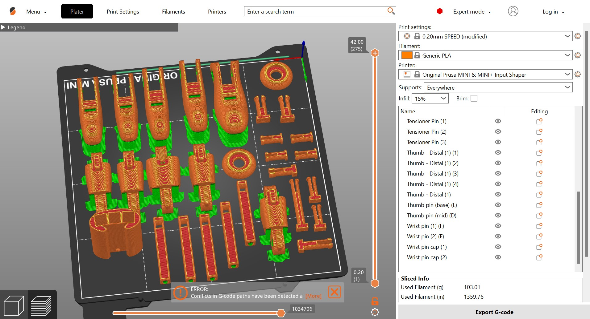

Project 4
e-NABLE Hand
Project Description:
The goal of this project was for us to print and assemble an e-NABLE Phoenix v3 prosthetic hand, develop a modification for a specific task, and further build our understanding of the design process, rapid prototyping, 3D modeling, and 3D printing.
Scaled Hand in Fusion

We scaled each part of the hand by 150% in Fusion. Additionally, we removed the piece needed for the heat treatment as it was unnecessary to print.
Finger joints in Prusaslicer
We printed all the joints together and used supports, which we later learned were unnecessary.
Palm in Prusaslicer
We did not use supports for the palm print, which resulted in a bit of stringiness on the inner part of the top overhang, but the print was still successful.
Wrist Piece in Prusaslicer
The wrist piece did not require any supports and printed successfully.
Assembled Hand
By watching the video and using the guide on the official e-NABLE website we were able to assemble the hand without too much difficulty. Although, we did have some trouble successfully securing the screws in the tensioner pins since we printed the pins with supports, which we were not supposed to and proved difficult to remove. However, we were able to assemble a fully functional e-NABLE hand.
Sketch of E-Nable Hand with Modification doing task
We decided to create a modification that would make writing easier as the e-NABLE hand makes it difficult to grip and hold a pencil or other writing tool. For our design, we added a smallholder piece on the inner palm, almost like a tensioner pin, which different-sized pieces with clip-ons could be inserted into and kept in place by using a pin and pin holders. Different sized clip-on pieces could be printed and switched into the holder piece allowing the user to write with different sized writing instruments like pencils, pens, markers, etc. This modification would make writing dependent on elbow and shoulder movement.
Modification in Fusion
Our modification implemented the push pin and pin holder designs used in the original model. The goal of our modification was for the user to be able to use different writing tools since the piece where the writing instrument is clipped into can be switched out for a piece of another size.
Final Reflection
Overall, I enjoyed the assembly portion of this project. I can't talk about the entire assembly process, as my partner and I divided the work up, but I found using the e-NABLE cheat sheet guide to be more helpful than the video. The video felt a bit unnecessary and did not explain some portions too well, like differentiating between the different finger joint pins, but it was still helpful overall.
I also enjoyed the modification process despite having some difficulty thinking about the task I wanted to focus on. I thought of Sara Hendren's, "What Can a Body Do?" and how different tasks can prove difficult for differently-abled people. Additionally, I thought about the idea of body-plus that she mentions. While going about my daily life, I thought about tasks that would be difficult for someone using a prosthesis. My mind went to things like brushing my teeth, grabbing things, and writing. So, my partner and I decided to create a modification that would make writing easier for someone using an e-NABLE hand.
I also enjoyed learning about the e-NABLE organization. While thinking about the modification, I searched the internet for difficulties people had with prosthetic hands. I learned about the price differences between 3D-printed prosthetic hands and professionally built prostheses. The price difference was astounding! I think the accessibility that the e-NABLE organization provides is truly amazing. However, I did see some people note that the cost of a professionally built hand includes all the research, experience of the builders, and more expensive materials.
This idea of acknowledging the work that leads to an actual design delves into the notion of rapid prototyping and how organizations like e-NABLE can build off the designs of others in a positive way. Additionally, I think it is interesting how different prosthetic hands use different methods. For example, some involve robotics and others are built to solely utilize human movement. These different designs must involve different forms of rapid prototyping. I assume that both involve a lot of human involvement to understand how the prosthesis fits and functions. However, I would think that robotic prosthesis requires more prototyping for the internal design as well as an understanding of human fit and function. Both designs should include people with missing hands or fingers, who would use the prosthesis, to better understand how the prosthesis would interact with them, a practice that connects to the notion of User-centered design discussed in Sasha Constanza-Chock's "Design Justice."